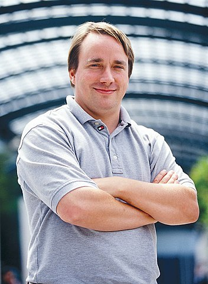

The picture of Torvalds Linus
By Unknown photographer who sold rights to the picture to linuxmag.com - Linuxmag.com; The image is from an article in a December 2002 issue of Linux Magazine
CC BY-SA 3.0Link
Linus Benedict Torvalds is a
renown Software Engineer of all time
Click to read more about him
Linus Benedict Torvalds born 28 December 1969 is a Finnish-American software engineer who is the creator and, historically, the main developer of the Linux kernel, used by Linux distributions and other operating systems such as Android. He also created the distributed version control system Git and the scuba dive logging and planning software Subsurface.
He created and is the main developer of the widely known Linux Kernel
He created version control system Git
He created scuba dive logging and planning software Subsurface
He was honored, along with Shinya Yamanaka, with the 2012 Millennium Technology Prize by the Technology Academy Finland "in recognition of his creation of a new open source operating system for computers leading to the widely used Linux kernel
He is also the recipient of the 2014 IEEE Computer Society Computer Pioneer Award
He was honored the 2018 IEEE Masaru Ibuka Consumer Electronics Award
On 20 April 2012, Torvalds was declared one of two winners of that year's Millennium Technology Prize, along with Shinya Yamanaka. The honor is widely described as technology's equivalent of the Nobel Prize.
He was awarded the C&C Prize by the NEC Corporation in 2010 for "contributions to the advancement of the information technology industry, education, research, and the improvement of our lives"
In 1996, the asteroid 9793 Torvalds was named after him
In 1997, Torvalds received his master's degree (Laudatur Grade) from the Department of Computer Science at the University of Helsinki. Two years later he received honorary doctor status at Stockholm University, and in 2000, he received the same honor from his alma mater.
University of Helsinki has named an auditorium after Torvalds and his computer is on display at the Department of Computer Science.